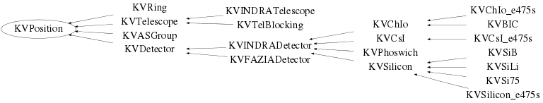

class KVPosition
KVPosition Base class used for handling geometry in a multidetector array. Each KVPosition object represents an element of solid angle, with a domain in polar angle (theta) and azimuthal angle (phi). All methods necessary to inquire about relative positions of such elements (overlaps, inclusion, etc.) are provided. The coordinate system has the target position for its centre. The beam direction defines the positive z axis, with respect to which polar angles are measured. The +ve x-axis is taken to be vertical, and azimuthal angles increase when going clockwise from the +ve x-axis, looking towards the +ve z direction: phi=0 (x) beam | | | +------- phi=90 All angles are in degrees. Polar angles (theta) vary between 0 and 180 degrees Azimuthal angles (phi) vary between 0 and 359.999... degrees. An element is defined by theta-min/max and phi-min/max: Theta-min is the polar angle of the edge closest the beam (+ve z) axis Theta-max is the polar angle of the edge furthest from the beam (+ve z) axis Phi-min is the phi angle of the edge which is the most anticlockwise when looking as in the figure shown above Phi-max is the phi angle of the edge which is the most clockwise when looking as in the figure shown above The above definitions mean that phi-min is not necessarily smaller than phi-max: we redefine "smaller" for phi angles to mean "more anticlockwise than" or "less clockwise than". Some examples: an element with phi-min = 20 and phi-max = 40 has an azimuthal width of 20 degrees; an element with phi-min = 40 and phi-max = 20 has an azimuthal width of 340 degrees; an element with phi-min = 350 and phi-max = 10 has an azimuthal width of 20 degrees. Examples of use of KVPosition objects: Generating a random unit vector within a given angular range KVPosition pos; | pos.SetPolarMinMax(20, 30); | -- or: KVPosition pos(20, 30, 0, 90); pos.SetAzimuthalMinMax(0, 90); | TVector3 dir1 = pos.GetDirection();//unit vector in direction theta=25, phi=45 TVector3 dir2 = pos.GetRandomDirection();//isotropic direction within angular limits of pos TVector3 dir3 = pos.GetRandomDirection("random");//random direction
Function Members (Methods)
public:
Data Members
private:
| Double_t | fDistance | distance in cm from centre of solid angle element to coordinate system origin (target) |
| TGeoHMatrix* | fMatrix | transform world<->detector coordinates |
| Double_t | fPhi | azimuthal angle in degrees with respect to 12 o'clock (=0 deg.), corresponds to centre of telescope |
| Double_t | fPhi_max | azimuthal angle in degrees corresponding to most clockwise edge of telescope |
| Double_t | fPhi_min | azimuthal angle in degrees corresponding to most anticlockwise edge of telescope |
| TGeoBBox* | fShape | shape of detector volume |
| Double_t | fSolidAngle | solid angle = area of entrance window / distance**2 |
| Double_t | fTheta | polar angle in degrees with respect to beam axis, corresponds to centre of telescope |
| Double_t | fTheta_max | polar angle in degrees of the edge furthest from the beam axis |
| Double_t | fTheta_min | polar angle in degrees corresponding to edge of telescope closest to beam axis |
Class Charts
{kind=link}
{kind=link}
{kind=link}
{kind=link}

Function documentation
void SetPolarAngle(Double_t th)
Sets the polar angle corresponding to the centre of this telescope/solid angle element/etc. If the polar width has been set already (KVPosition::SetPolarWidth), the limits theta-min and theta-max are calculated.
void SetAzimuthalAngle(Double_t ph)
Sets the azimuthal angle corresponding to the centre of this telescope/solid angle element/etc. If the azimuthal width has been set already (KVPosition::SetAzimuthalWidth), the limits phi-min and phi-max are calculated.
void SetPolarWidth(Double_t pw)
Set theta_min and theta_max from width (in degrees). If theta is already known, use to set theta_min and theta_max. If not, keep relative values (negative) of theta_min and theta_max, to be used when theta is set
void SetPolarMinMax(Double_t min, Double_t max)
Set min and max polar angles and calculate (mean) theta
void SetAzimuthalWidth(Double_t aw)
Set phi_min and phi_max from width (in degrees) If phi is already known, use to set phi_min and phi_max If not, keep relative values (negative) of phi_min and phi_max, to be used when phi is set
void SetAzimuthalMinMax(Double_t min, Double_t max)
Set min and max azimuthal angles and calculate (mean) phi
TVector3 GetRandomDirection(Option_t* t = "isotropic")
Returns a unit vector in a random direction corresponding to this detector. Depending on the optional option string, the direction is either drawn at "random" among the corresponding angles, or "isotropic". By default, the direction is "isotropic". * ROOT Geometry * Direction corresponds to a random position on the detector's entrance window. The "isotropic" option has no effect.
void GetRandomAngles(Double_t& th, Double_t& ph, Option_t* t = "isotropic")
Set th and ph to random values between the max and min limits defining the solid angle element. Depending on the optional option string, the direction is either drawn at "random" among the corresponding angles, or "isotropic". By default, the direction is "isotropic". * ROOT Geometry * th and ph correspond to a random position on the detector's entrance window. The "isotropic" option has no effect.
Bool_t IsInPhiRange(const Double_t phi)
kTRUE if given angle phi is within the azimuthal range of this solid angle element
Bool_t IsInPolarRange(const Double_t theta)
kTRUE if given angle theta is within the polar range of this solid angle element
Bool_t IsAlignedWith(KVPosition* pos)
kTRUE if one of the two solid angle elements is completely contained within the other.
Bool_t IsOverlappingWith(KVPosition* pos)
kTRUE if there is at least partial overlap between two solid angle elements
Bool_t IsAzimuthallyWiderThan(KVPosition* pos)
kTRUE if "this" has larger azimuthal width than "pos". Takes care of cases where the solid angle straddles 0 degrees
TVector3 GetDirection()
void GetCornerCoordinates(TVector3* , Double_t = 0)
Fill the array (TVector3 corner[4]) with the coordinates of the 4 'corners' of the solid angle element. These 'corners' are the points of intersection between the plane defined by the normal to the centre of the solid angle (direction: theta,phi), at a distance fDistance [cm] from the origin, and the four lines starting at the origin with directions (thetamin,phimin), (thetamax,phimin), (thetamax,phimax), (thetamin,phimax). If optional argument 'depth' [cm] is given, the coordinates are calculated for the plane situated at distance (fDistance+depth) from the origin. The order of the 4 corners is as follows: corners[3] : theta-min, phi-min corners[2] : theta-max, phi-min corners[1] : theta-max, phi-max corners[0] : theta-min, phi-max Coordinates are in CENTIMETRES
void GetCornerCoordinatesInOwnFrame(TVector3* , Double_t = 0)
Like GetCornerCoordinates(), except that the coordinates correspond to a reference frame in which the +ve z-axis goes through the centre of the solid angle
Double_t GetSolidAngle(void)
Return values of the solid angle (in msr) seen by the geometric ensemble For simple geometries defined by theta_min/max etc., this is exact. For ROOT geometries we calculate the area of the entrance window and divide it by the square of the distance to the detector.
Double_t GetAzimuthalWidth(Double_t phmin = -1., Double_t phimax = -1.) const
Calculate azimuthal width taking phi-min as the most anticlockwise point of the element and phi-max the most clockwise. If no arguments are given, width calculated for this object Otherwise, width calculated for given phi-min and phi-max
void GetWidthsFromDimension(Double_t lin_dim)
Calculate azimuthal and polar widths for a square element placed at a given distance from the origin with linear dimension 'lin_dim' (in mm). SetDistance, SetTheta and SetPhi must already have been called.
TRotation GetRandomIsotropicRotation()
Generates a rotation which, if applied to a unit vector in the Z-direction, will transform it into an isotropically-distributed vector in this angular range.
void SetMatrix(const TGeoHMatrix* )
* ROOT Geometry * Set the global transformation matrix for this detector If shape has been set, we set the (theta,phi) angles corresponding to the centre of the entrance window, and the distance from the target.
void SetShape(TGeoBBox* )
* ROOT Geometry * Set the shape of this detector If matrix has been set, we set the (theta,phi) angles corresponding to the centre of the entrance window, and the distance from the target.
TGeoHMatrix * GetMatrix() const
* ROOT Geometry * Return global transformation matrix for this detector
TVector3 GetRandomPoint() const
* ROOT Geometry * Generate a vector in the world (laboratory) frame from the origin to a random point on the entrance window of the detector. It is assumed that the detector volume was defined in such a way that the entrance window corresponds to the facet in the X-Y plane placed at -dZ. NOTE: we force the use of TGeoBBox::GetPointsOnFacet. For TGeoArb8, the method has been overridden and does nothing. We use the TGeoBBox method, and then use TGeoShape::Contains to check that the point does actually correspond to the TGeoArb8.
TVector3 GetCentre() const
* ROOT Geometry * Generate a vector in the world (laboratory) frame from the origin to the centre of the entrance window of the detector. It is assumed that the detector volume was defined in such a way that the entrance window corresponds to the facet in the X-Y plane placed at -dZ.
void SetPhiMinMax(Double_t min, Double_t max)
Double_t GetThetaMin() const
Double_t GetThetaMax() const
Double_t GetSinTheta() const
Double_t GetCosTheta() const
void SetDistance(Double_t d)
Double_t GetDistance(void)